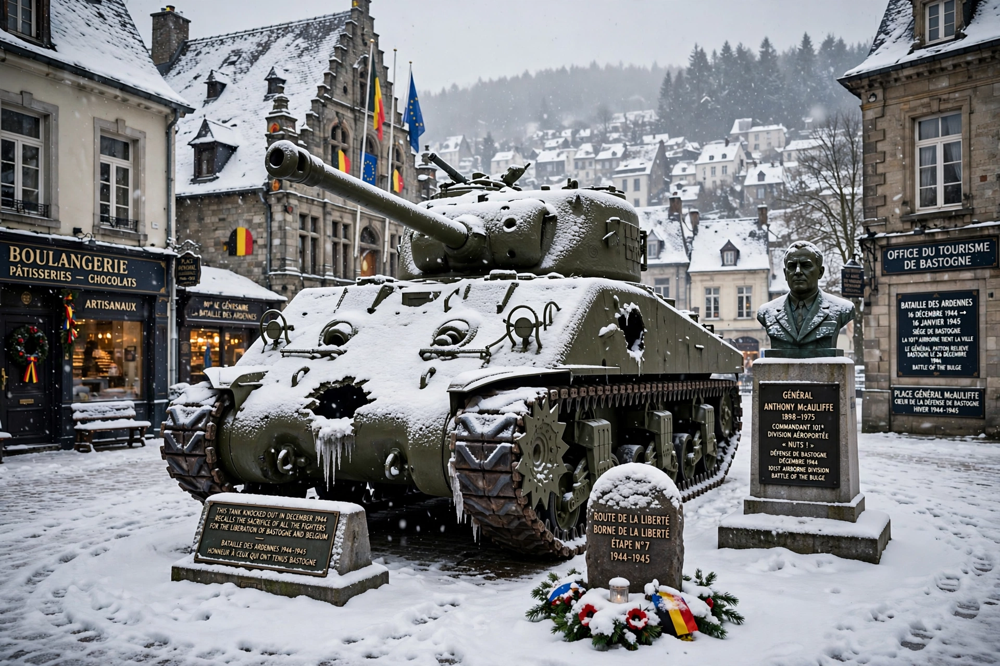

Bastogne is a city and municipality in Wallonia, Belgium, in the province of Luxembourg in the Ardennes. It is famous for its role in the Battle of the Bulge in the winter of 1944–45.

In December 1944, the US 101st Airborne Division and other units held the road junction town while encircled by German forces. Asked to surrender, Brigadier General Anthony McAuliffe famously replied "NUTS!" The siege was relieved by Patton's Third Army on 26 December.
The Mardasson Memorial and Bastogne War Museum commemorate the battle. The town also marks the end of the Liège–Bastogne–Liège cycling classic's outward leg.